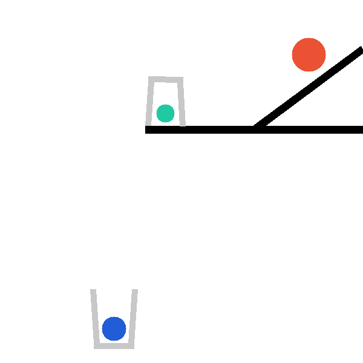
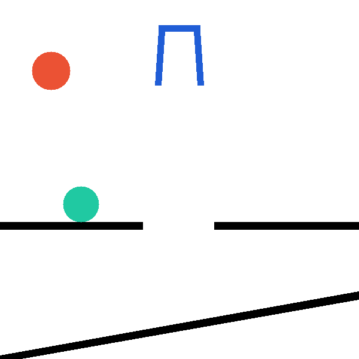
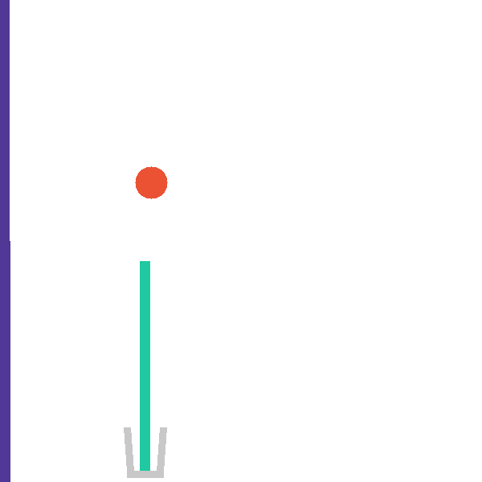

The Interphyre Environment
Interphyre is a 2D procedural physics benchmark, built on PHYRE level designs, so that solving a task requires
interaction, not recall. In every level the agent places a red ball at (x, y, r); the
simulator then runs forward and checks a level-specific success predicate. The catch: outcomes depend on
contact chains, lever mechanics, and collision timing that cannot be read off a static scene
description — the agent must run experiments to discover them. The curriculum ships
25 levels × 10,000 pre-validated seeds = 250,000 certified task instances, plus a
snapshot/restore intervention API for paired counterfactual rollouts.
Level gallery








The tool-call & intervention API
Each level exposes a structured tool surface the agent invokes directly, so that hypothesis testing is explicit and measurable. The catapult level, for example, exposes four complementary tools:
describe_scene_geometry()
# Strategy-neutral inventory: balls (pos, radius, dynamic),
# bars (centre, angle, length), baskets, key pairwise distances,
# and the success condition. A first-pass survey.
predict_first_contact(x, y, radius)
# Cheap pre-check (≤90 steps): which object the red ball hits
# first, the contact step, approach speed, point, surface normal.
trace_green_ball(x, y, radius)
# Lightweight probe: green ball's (x,y) waypoints every 30 steps
# plus start/end/peak summary. "Where does it go?"
simulate_with_trace(x, y, radius, object_names, stop_step)
# Full rollout: per-object kinematic extrema (peak_y, v_max,
# Δpos, angular speed) + up to 15 contact events.
finish(x, y, radius)
# Commit the final placement; environment scores the predicate.
Other levels add bespoke analysis tools — compute_intercept_setup() (falling_into_place),
compute_basket_analysis() (basket_case), get_ramp_center() (pass_the_parcel).
The same backend exposes a snapshot/restore primitive that branches a shared
mid-trajectory state into paired counterfactual rollouts (paper Figure 13).